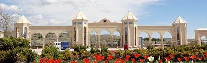

Hakkımızda
Ana Sayfa
Eğitimler
iletişim
Videolar
<!-- <div class="icerik"> <div class="ic1"> <h3>Kütahya Dumlupınar Üniversitesi</h3>  <p> Kütahya il merkezinde yer alan Evliya Çelebi Yerleşkesi, 7 bin 500 dekarın üzerinde bir alana sahiptir. Yerleşke Osmanlı-Selçuklu mimari felsefesi üzerine kurulmuştur. Yerleşkeye giriş, Yerleşkenin ortasında yer alan iki büyük kule ile yanlara doğru küçülen kuleler ve bu kulelerin arasındaki kemerli girişlerin olduğu taç kapıdan sağlanmaktadır. Yerleşke alanında Yerleşkeyi çevreleyen geniş bir ring yolu oluşturulmuş ve fakülte bloklarının içine taşıtların girmesi engellenerek taşıt ve yaya sirkülasyon alanları birbirinden büyük ölçüde ayrılmıştır. </p> </div> <div class="ic1"> <h3>Eğitim Fakültesi</h3> <p> Kütahya Dumlupınar Üniversitesi Eğitim Fakültesi’nin gerek Kütahya, gerek çevre il ve ilçeler ve gerekse Dumlupınar Üniversitesi için eğitim alanında yeni yönelimler, yeni açılımlar ve yeni bir dinamizm getireceği düşünülmektedir. Bu noktadan hareketle, Kütahya Dumlupınar Üniversitesi Eğitim Fakültesi’nin çeşitli çevrelere sağlayabileceği başlıca katkılar şöyle sıralanabilir: </p> </div> </div> --> </div> </body> </html>